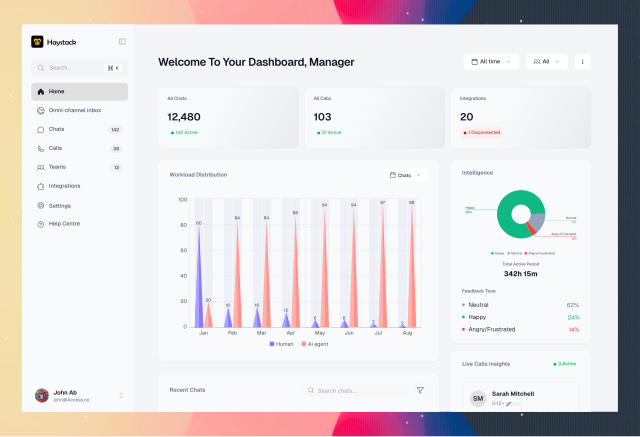

RIHUB | Ai powered Loan recovery software
Overview
Rihub is an ai powered Loan Recovery Software that helps Finance industries recover loans easier and faster. Rihub is basically an easier and less time-consuming way to recover loans with ai

Design Process
For the design process, I followed 4 non linear critical steps.
[Empathize] → [Problem & Goal Definition] → [Ideation] → [Prototype & Testing] → [Iterations]
The Problem
Too many loans to handle, while you're still doing the old defaulters, there's a high number of new defaulters, human agents are constantly stressed out with the stress of reaching out to old and new defaulters and documents screening before approving loan, thereby customers are being lost in the process and money too because it's hard to keep up with all loans at once
The Goal
The Goal is to make the process of loan recollection & approval autonomous, thereby allowing human focus on high risk and long time defaulters or customers that have gone into legal stage.
Research
To ensure our design decisions were grounded in real-world data rather than assumptions, we did a comprehensive research phase. Our focus was to gather actionable data directly from the people experiencing the problem daily.
Methodology
To solve the problem I engaged series of loan recollection officers in series of user interview sessions, and proceeded to design user personas to easily understand the data received.


Competitor's Analysis
To validate the market need for RIHUB, we analyzed three standard approaches currently used in the finance industry for loan recovery and management. We evaluated them based on Autonomous Outreach, Smart Triage (Human Handoff), Agent UX, and Approval Automation.

Research Insights
- A massive portion of daily agent workload is spent on borrowers who are not actually trying to default. Up to 65% of missed payments are due to simple forgetfulness, expired cards, or temporary technical issues.
- Agents open 3 to 4 different apps to view payment history, read emails, and open PDF documents.
- Managers lack real-time visibility into collection speed and agent efficiency.
Solution
I tailored the solution data from the Research insights. It includes:
- 100% Autonomous Outreach: AI recovers low-risk accounts automatically in the background.
- Cleaner and more unified Workspace
- Real-Time Data visualization
Information Architecture
📑 RIHUB — Information Architecture (IA)
-
1.0 Executive Dashboard (Home)
- 1.1 Portfolio Overview: Total debts assigned, total recovered amount, active default rates.
-
1.2 Real-Time Analytics:
- 1.2.1 Collection Velocity Graph (Time vs. Recovery Speed).
- 1.2.2 Recovery Rate Performance vs. Monthly Target.
- 1.2.3 Portfolio Health Breakdown (Donut Chart: Low Risk, Medium Risk, High Risk, Legal Stage).
-
1.3 Urgent Actions Required (Priority Queue):
- 1.3.1 Broken Promises (Failed payment commitments).
- 1.3.2 Pending Hardship Document Reviews.
- 1.3.3 Legal Handoff Approvals.
-
2.0 Accounts & Defaulters Management
- 2.1 Debtor Directory: Filterable list by risk tier, days past due (DPD), balance size, AI campaign status, and assigned agent.
-
2.2 Debtor Detail View (Split-Pane Workspace):
- 2.2.1 Borrower Profile Header: Balance, DPD status, contact info, risk score badge.
- 2.2.2 Communication Timeline: All call logs, transcripts, SMS/WhatsApp delivery receipts, customer responses.
- 2.2.3 Integrated Document Viewer: Direct preview of customer uploads (proof of payment, medical notices, hardship letters).
- 2.2.4 Agent Intervention Bar: Manual call trigger, override AI status, pause campaign, or escalate to legal.
-
3.0 AI Recovery Rules & Campaign Engine
- 3.1 Strategy Builder: Configure recovery flows for different default stages (e.g., 1–30 DPD vs. 60+ DPD).
- 3.2 AI Script & Persona Selector: Select tone of voice (e.g., Gentle Reminder vs. Firm Escalation) and language preferences.
- 3.3 Smart Triage Thresholds: Set rules for when the AI should automatically transfer a customer to a human agent.
-
4.0 Call Logs & Communication Center
- 4.1 AI Call Records: List of all automated calls made, call duration, outcome status, and recording playback.
- 4.2 Sentiment & Call Transcripts: Searchable text transcripts tagged with customer sentiment analysis (e.g., Cooperative, Hostile, Disputed).
- 4.3 Message Outbox: History of SMS, Email, and WhatsApp automated notifications.
-
5.0 System & AI Outreach Settings (Customized)
- 5.1 Organization & Team Management: Agent roles, permissions, and account allocation.
-
5.2 AI Calling & Voice Outreach Parameters:
- 5.2.1 Allowed Calling Windows: Set operational time frames for automated AI calls (e.g., Allow calls between 9:00 AM – 6:00 PM).
- 5.2.2 Do Not Call (DNC) & Blackout Hours: Define restricted times, quiet hours, weekends, or public holidays when no calls may be placed.
- 5.2.3 Maximum Call Attempts: Cap the number of automated call attempts per debtor (e.g., Max 2 calls per day, max 5 calls total per week).
- 5.2.4 Unreachable / Fallback Action: Configure default follow-up channel when a customer is unreachable (e.g., if call goes unanswered/busy, automatically send an SMS / WhatsApp message with payment link after 5 minutes).
- 5.3 Compliance & Regulatory Controls: Statutory quiet hours enforcement, local debt collection compliance rules, and audit trail logs.
- 5.4 Integrations: Core banking system sync, loan origination software (LOS) connectors, payment gateways, and CRM hooks.
Paper Wireframes
To begin the design stage, I designed the solutions above into a paper wireframe to help give a quick view of what the final design will look like, brainstormed, added and removed ideas, tailoring them to the Solutions above.
The Final Design
I converted the completed paper wireframes to the HIFI screens.
The Dashboard : The RIHUB Dashboard is engineered to give senior agents and risk managers immediate clarity on portfolio performance, AI recovery efficiency, and critical intervention points—eliminating operational clutter so users can make data-driven decisions in seconds.
The loan recovery worklist : Escalated loans, 60+DPD loans and legal cases are escalated to the human agent to take over on this screen.

Integrations : The integration screens show all added integrations, their states, and what they do. It also shows the way the permitted integrations can be added.


The ai chatbot in app : I have also included an ai agent to make work easier for the loan-collection officers to speed up workflow, the agent can verify quick data, create writeups, draft legal documents and adjust preexisting ones on request.

Ai control and general settings : Ai agents, including the integrated ones can be controlled from the ai control center.

Other screens : The integration screens show all added integrations, their states, and what they do. It also shows the way the permitted integrations can be added.


Projected Business & Agents Impacts
- Projected to accelerate Collection Velocity by 40%
- With AI handling up to 70% of routine follow-ups and payment reminders, financial institutions can scale their loan portfolios without needing to aggressively expand their human call center staff.
- Projected to drastically Reduce Agent Burnout by 60%
- 60% Faster Case Resolution
What I learnt
- Customers get offended at ai electronic voices, the wait, latency issues etc
- Customers don’t have a problem with being responded with ai, they hate spending too much time trying to resolve basic issues or agents not having enough information.
Iterations
Ai called at ungodly hours and continued calling customers even if they are unavailable, so we created a way to set them to not call past a time and no of calls before defaulting to a text The new screen is attached below
Ai control and general settings : Ai agents, including the integrated ones can be controlled from the ai control center.